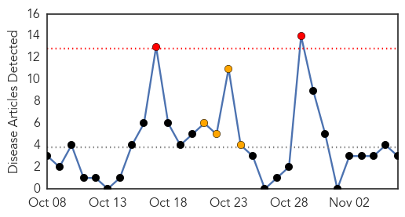
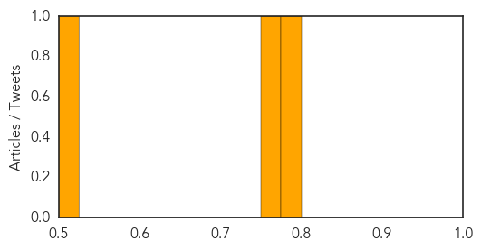

Meningitis
30-Day Web Trend
2 alerts, 4 warnings

30-Day Twitter Trend
0 alerts, 0 warnings

Article Locations
Article Confidences
Top Articles:
Top Tweets:
-
No tweets found for Nov 06, 2014
Unknown
30-Day Web Trend
0 alerts, 0 warnings
30-Day Twitter Trend
0 alerts, 0 warnings
Article Locations
Article Confidences

Top Articles:
- 0.982
- Pigs Slaughtered in Zambia to Halt Spread of African Swine Fever
- 0.966
- CDC cites 2 more deaths in EV-D68 cases, more polio-like illnesses
- 0.959
- CSU research finds camels spread MERS virus
- 0.925
- NHS flu vaccinations extended to older children in fight against winter colds
- 0.917
- Chicago Tribune
- 0.917
- Chicago Tribune
- 0.917
- Chicago Tribune
- 0.901
- 'Kissing Bug' Now Spreading Tropical Disease in U.S.
- 0.893
- Last Dallas-related Ebola monitoring in Texas to end Friday
- 0.866
- Coast Guard responds to missing U.S. military aircraft in Gulf of Florida
- 0.866
- Putin discusses "deterioration" in east Ukraine with security chiefs
- 0.866
- Coalition strike killed six Nusra fighters in Syria
- 0.866
- Algerian killed, Frenchman wounded in Yemen attack
- 0.850
- Zoo vet treating lions develops flu-like symptoms, relieved
- 0.846
- Boston: Scores sickened with suspected norovirus at Condon Elementary School
- 0.820
- Germany reports deadly bird flu virus on turkey farm
- 0.815
- Lawsuits filed against GHS in response to deadly infections
- 0.761
- Nepali Times Buzz
- 0.754
- New hunting rules after illness found in captive Ohio buck
- 0.728
- Video: The battle to rescue Kobane’s wounded
- 0.714
- Doctors recommend children 2 to 8 get flu mist
- 0.702
- Dr Sambo urges countries to accelerate the progress of implementation of the African Public Health Emergency Fund (WHO
- 0.696
- 100 students absent at S. Boston school hit by norovirus
- 0.681
- Psoriasis or rheumatoid arthritis linked to heart risk
- 0.653
- Winnipeg health officials are using the web to fight syphilis outbreak
- 0.634
- More joint replacement surgeries in Western Cape
- 0.626
- Hollande ‘won’t seek second term’ if unemployment continues to rise
- 0.625
- Behind Maplewood incident, a rising trend of hospital violence
- 0.591
- Burkina’s army leader rejects two-week return to civilian rule
- 0.589
- 'Kissing Bug' Parasitic Disease From Face Bites Spreads in South
- 0.580
- The newest kissing disease comes from a bug
- 0.569
- First-year French teachers get food stamps instead of salaries
- 0.561
- Mugabe appeal as Snr doctors join strike
- 0.560
- Cat scratch leads to Upstate rabies warning
- 0.557
- Janssen to Demonstrate Breadth of Oncology Portfolio with 42 Clinical Data Presentations at the 2014 American Society of Hematology (ASH) Annual Meeting
- 0.553
- Penn researchers show that 23% of patients who survive septic shock return to hospital within 30 days
- 0.549
- Manet’s ‘Le Printemps’ fetches record $65.1mn at auction
- 0.530
- EHV-1 Confirmed in Bonneville County, Idaho
- 0.524
- Senior doctors in Zimbabwe join strike for "overloaded work"
- 0.501
- Gran Canaria nudist beach hit by Ebola scare after African migrants arrive
Top Tweets:
- 0.762
- Cases travel; people become infected.
- 0.583
- RT: DíaMalariaAméricas: 7 de los 21 países endémicos están clasificados actualmente por la en etapa de pre-eliminación m…